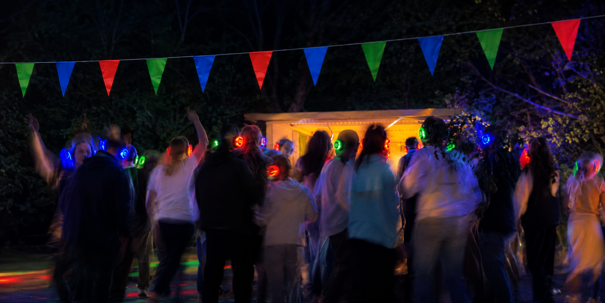

Premiumhörlurar för fest, bröllop och event.
Med tyst disko får ni en flexibel och annorlunda lösning för festen. Gästerna kan röra sig fritt, välja musik och vara en del av upplevelsen utan att ljudnivån behöver ta över hela lokalen.

PRISER
Tydliga paketpriser – utan krångliga offerter.
10 hörlurar
25 hörlurar
50 hörlurar
75 hörlurar
100 hörlurar
ALLA PAKET INNEHÅLLER
FRIHET ATT FESTA VAR SOM HELST
Ta festen dit ni vill! Både hörlurar och sändare drivs av batteri med över 6 timmars batteritid. Ingen Wi-Fi eller fast elanslutning behövs under eventet – perfekt för utomhusfester, stugor och avlägsna platser.
SÅ FUNGERAR DET
Berätta om ditt event, datum och ungefär hur många gäster ni blir.
Vi levererar till er eller så hämtar ni paketet i Örnsköldsvik.
Anslut den musik eller ljudkälla ni själva vill använda. Mobil, dator, DJ-utrustning eller mikrofon fungerar via Bluetooth eller kabel.
Ta på hörlurarna, välj kanal och låt kvällen börja.
KONTAKTA OSS
Kontakta oss gärna om du vill veta mer om våra paket, tillgänglighet eller leverans. Vi hjälper dig att hitta rätt lösning för ditt event.
Silent Disco Norrland
Telefon: 079-334 98 96
E-post: silentdisconorrland@gmail.com
Område: Örnsköldsvik med omnejd
Hämtning enligt överenskommelse. Leverans kan ordnas mot avgift.